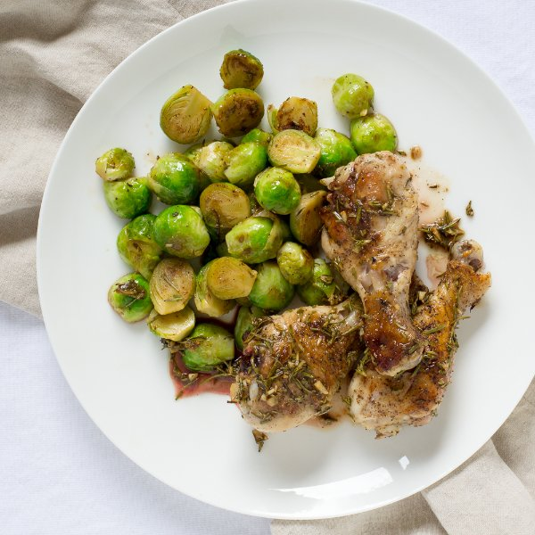

Garlic-Rosemary Chicken Drumsticks with Sautéed Brussels Sprouts

Total Time
35 min
Nutrition (Per Serving)
699.8 kcalCalories
60.7 gProtein
25.2 gCarbs
41.2 gFat
Full nutrition table
| Calories | 699.8 kcal |
| Total fat | 41.2 g |
| Saturated fat | 19.2 g |
| Trans fat | 0.2 g |
| Cholesterol | 260.8 mg |
| Sodium | 379.4 mg |
| Carbohydrates | 25.2 g |
| Fiber | 9.9 g |
| Sugars | 5.4 g |
| Protein | 60.7 g |
| Potassium | 1605.3 mg |
| Calcium | 153.1 mg |
| Iron | 5.9 mg |
| Vitamin A | 1846.3 IU |
| Vitamin C | 199.9 mg |
| Vitamin D | 5.7 IU |
Cookware
Ingredients
- 2 lbBrussels sprouts
- 2 ½ lbchicken drumsticks
- 8 fl ozchicken or vegetable broth
- 1 small pkgfresh rosemary
- 4 clovesgarlic
- 1lemon
- black pepper
- salt
- virgin coconut oil
Steps
- Wash and dry the fresh produce.2 lb brussels sprouts
1 small pkg fresh rosemary - Preheat the oven to 450°F and position the rack in the center. Place a baking dish (one that is big enough to hold the chicken) inside the oven to warm up.
- Trim off and discard the stem ends of the Brussels sprouts, then remove the outer layer of leaves; halve the sprouts lengthwise (or quarter if they are large).
- Preheat a skillet over medium-high heat.
- While the skillet heats up, pat dry the chicken with paper towels and place on a plate, then generously season with salt and pepper.2 ½ lb chicken drumsticks
1 tsp salt
1 tsp black pepper - Add coconut oil to the skillet and swirl to coat the bottom.2 tbsp virgin coconut oil
- Place the drumsticks in the skillet; cook, turning every 1 minute or so, until the they are browned on all sides (but not cooked through). Once done, remove the baking dish from the oven and transfer the chicken to it.
- While the chicken cooks, one by one, holding a sprig of rosemary at its top, run you fingers down it to remove the leaves. Discard the sprigs and chop the leaves.
- Trim off and discard the root end of the garlic; peel and mince or press the garlic.4 cloves garlic
- Juice the lemon into a small bowl.1 lemon
- Once the chicken has been transferred, return the skillet to the stove and reduce the heat to medium. Add the rosemary, garlic, ½ of the lemon juice, and ½ of the broth to the skillet. Deglaze the skillet by scraping up browned bits from the bottom.4 fl oz (½ cup) chicken or vegetable broth
- Pour the skillet sauce over top of the chicken. Place the chicken in the oven and bake until it is cooked through, about 10 minutes.
- Add more coconut oil to the skillet.2 tbsp virgin coconut oil
- Add the Brussels sprouts to the skillet and cook until they are lightly browned, 2 to 3 minutes.
- Once the sprouts are browned, add the remaining broth and season with salt and pepper. Cook, stirring occasionally, until the sprouts are tender and the liquid has evaporated, 3 to 4 minutes.4 fl oz (½ cup) chicken or vegetable broth
½ tsp salt
½ tsp black pepper - To serve, place the chicken and Brussels sprouts on a plate. Enjoy!